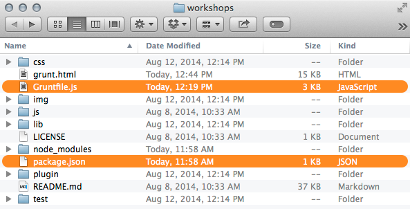

Grunt is not
scary or hard
Created by Jackie Keiser
Grunt is a
javascript task runner.
It helps you be lazy automate repetitive tasks.

What can Grunt do?
Grunt can take care of many of the repetitive tasks we do everyday.
Grunt can:
- Compile your Sass
- Reload your browser on file save
- Compress your CSS and minify your JavaScript
- Optimize your images
- Build sprite files
-
And 3,385 other things...
(http://gruntjs.com/plugins)
Let's get started
Example Project
Grab a copy of the example project to work from.
(https://github.com/MongooseDoom/grunt-example)
Examples of the end result are in the examples folder within the project.
Install Grunt
- Install Node.js if you haven't already.
(http://www.nodejs.org/) Click the big green install button - Install the Grunt.js command line interface
npm install -g grunt-cliNote: This does not install the task runner. It just allows you to run multiple versions of Grunt. Grunt works more on a per project basis.
Yes, you have to use the command line.

It's fine. I promise.
Starting a project with Grunt
You'll need to setup these two files in the root of your project
- package.json - General info about your project and manages dependencies. To automatically generate this file run:
npm init - Gruntfile.js - The main setup file that contains the configuration of the tasks we install.
package.json
General info about your project and manages dependencies
{
"name": "donuts-are-delicious",
"version": "0.1.0",
"devDependencies": {
"grunt": "~0.4.1",
"grunt-contrib-imagemin": "^0.8.0"
}
}
What else you could add to your package.json file(https://www.npmjs.org/doc/files/package.json.html)
Gruntfile.js
The main setup file that contains the configuration of the
tasks we install.
module.exports = function(grunt) {
// 1. All configuration goes here
grunt.initConfig({
pkg: grunt.file.readJSON('package.json'),
// 2. Configuration for each task
imagemin: {
...
}
});
// 3. Where we tell Grunt we plan to use this plug-in.
grunt.loadNpmTasks('grunt-contrib-imagemin');
// 4. Where we tell Grunt what to do when we type "grunt" into the terminal.
grunt.registerTask('default', ['imagemin']);
};
Install dependencies
Once you have your package.json file you can install all the dependencies you specified using the following command:
npm installgrunt and grunt-contrib-imagemin as our dependencies.
How to use a Grunt plugin
- Run command to install plugin
- Register task in Gruntfile.js
- Configure task
- Make sure it runs
1. Run command to install plugin
npm install grunt-contrib-sass --save-dev
The --save-dev flag means our package.json file gets automatically updated to include the dependency we've just installed
2. Register task in Gruntfile.js
grunt.loadNpmTasks('grunt-contrib-sass');
This tells Grunt to load tasks from the specified Grunt plugin.
3. Configure tasks
grunt.initConfig({
...
sass: { // Task
dist: {
options: {
style: 'expanded', // Output style
sourcemap: true // Use source maps
},
files: {
'css/styles.css': 'scss/styles.scss' // Output path : Sass path
}
}
},
imagemin: {
dynamic: { // Another target
files: [{
expand: true, // Enable dynamic expansion
cwd: 'examples/images/', // Src matches are relative to this path
src: ['**/*.{png,jpg,gif}'], // Actual patterns to match
dest: 'images/' // Destination path prefix
}]
}
},
...
});
In this example, we have the configuration for the sass and imagemin tasks.
4. Make sure it runs
grunt.registerTask('default', ['sass']);
grunt.registerTask('images', ['imagemin','sprite']);
In this example, running grunt in the command line without specifying a task will run the sass task. Running grunt images would run the imagemin and sprite task
Resources
- Grunt
(http://gruntjs.com/) - Grunt for People Who Think Things Like Grunt are Weird and Hard
(http://24ways.org/2013/grunt-is-not-weird-and-hard/) - imagemin task
(https://www.npmjs.org/package/grunt-contrib-imagemin) - watch task
(https://www.npmjs.org/package/grunt-contrib-watch) - sass task
(https://www.npmjs.org/package/grunt-contrib-sass) - spritesmith task
(https://www.npmjs.org/package/grunt-spritesmith) - browsersync.io - See it in action!
(http://www.browsersync.io/)